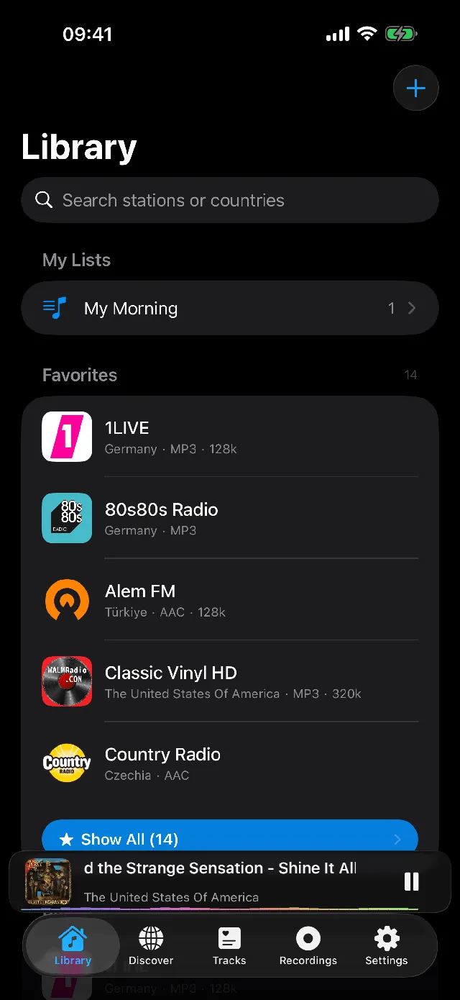
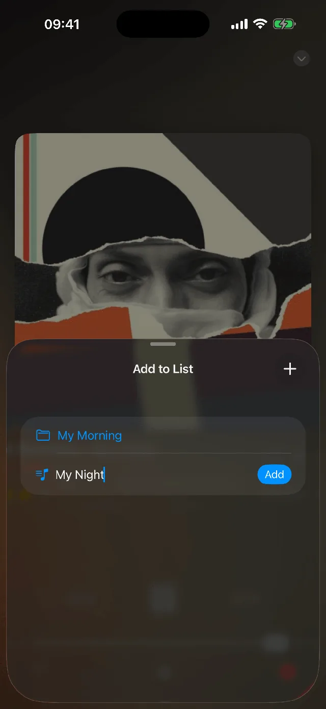
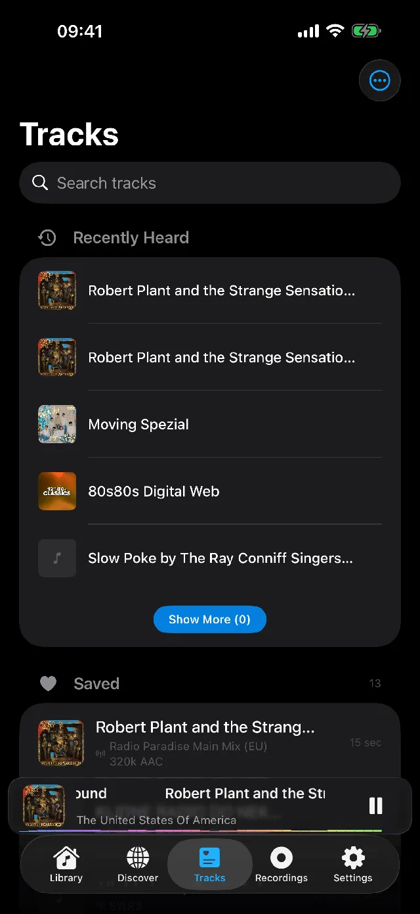
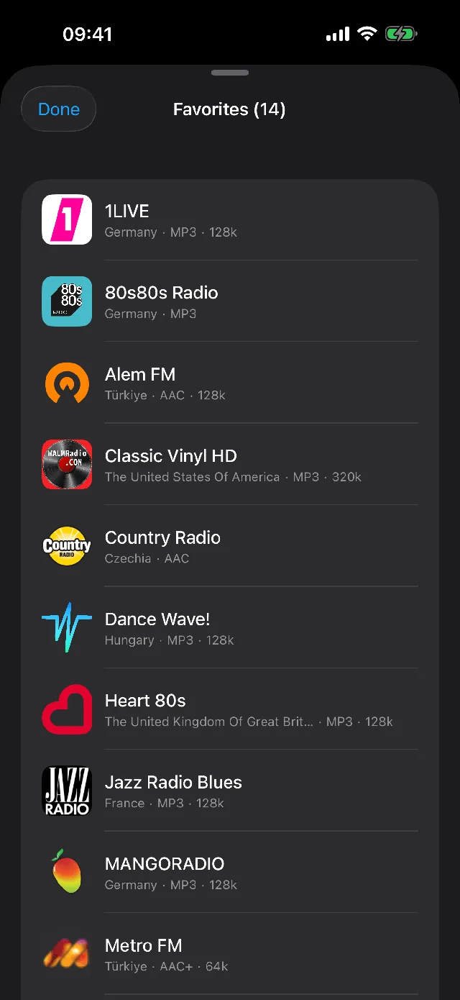
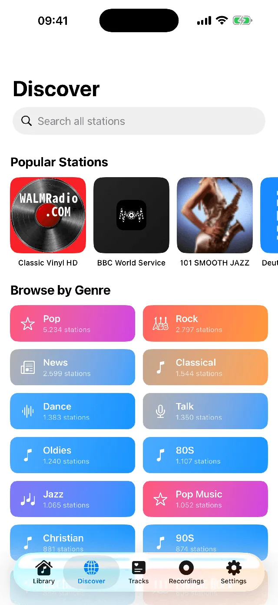

CarPlay built in
A preset grid that feels like real car radio buttons. Your stations follow you to the dashboard, wired or wireless.
Widgets and Lock Screen
Home Screen widgets, Live Activities with Dynamic Island, and full Lock Screen controls. The radio is always one glance away.
Song ID, no microphone
Macdio reads the stream itself to name the song playing, so it never asks for microphone access. Heart a song and it can land in your Apple Music library automatically.







Everything a radio listener needs
Does the iPhone have a built-in FM radio?
No. iPhones do not ship with an FM radio chip, so traditional offline radio is not possible. The answer is internet streaming: Macdio plays 55,000+ stations worldwide over Wi-Fi or cellular, from big networks to tiny local broadcasters.
How do I listen to radio in the car?
Connect your iPhone to CarPlay and open Macdio on the car screen. Favorites, discovery and a Now Playing view are all there, with custom presets that work like the buttons on an old car radio.
Can I record radio on my iPhone?
Yes. Tap record while listening and Macdio saves the audio in high quality. Split by Track mode cuts a session into individual songs automatically, each with its own artwork.
Can I fall asleep and wake up to the radio?
Clock Mode turns the iPhone into a bedside radio clock, and the sleep timer fades the audio out with presets. Alarms can wake you with your favorite station.
Does it sync with my other Apple devices?
Yes. Favorites, folders and saved songs sync through iCloud to iPad, Mac, Apple TV and Apple Watch. Macdio is one purchase for every Apple device you own. See Macdio for Mac and Macdio for Apple TV.
Ready to tune in?
Get Macdio on the App Store. One purchase covers iPhone, iPad, Mac, Apple TV and Apple Watch. No subscription, no ads, no tracking.